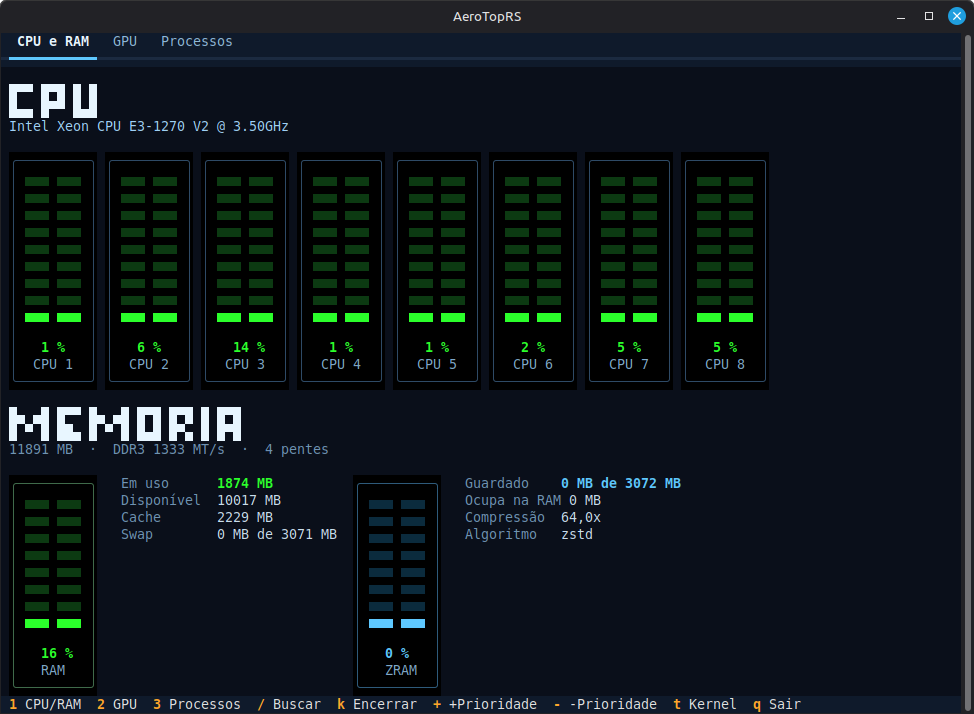

Monitor do sistema para o terminal, com o brilho do Windows 7 e a leveza do Rust. CPU, memória, zram, GPU e processos numa tela só.

Lê o /proc e o /sys direto e só redesenha a tela quando algo muda.
Três abas, cada uma com o essencial, em português e com números no formato brasileiro.
Um medidor por núcleo, igualzinho ao do Gerenciador de Tarefas do Windows 7.
RAM em uso, cache, swap, tipo e velocidade dos pentes, e quanto o zram está comprimindo.
Gráfico ao vivo, VRAM, temperatura, clocks, ventoinha e consumo em watts.
Bolinhas de status: ativo, segundo plano ou pesado. Busca, encerra e muda prioridade.
CPU, rede, disco, memória, zram e GPU num resumo: ocioso, folgado ou pesado.
Clique nas abas e role a lista com a rodinha. Teclado continua sendo o atalho.
Aparecem sempre no rodapé, então não precisa decorar.
Funciona em Linux de 64 bits com glibc 2.34 ou mais nova: Ubuntu 22.04+, Debian 12+, Mint 21+, Fedora, Arch, Slackware…
$ curl -fsSL https://raw.githubusercontent.com/1155dosilicon/aerotop/main/install.sh | shInstala o programa, o ícone e o atalho em Sistema → AeroTop, sem sudo. Para remover: … | sh -s -- --uninstall.
$ git clone https://github.com/1155dosilicon/aerotop $ cd aerotop $ ./install.sh
$ wget https://github.com/1155dosilicon/aerotop/releases/latest/download/aerotop $ chmod +x aerotop $ mkdir -p ~/.local/bin && mv aerotop ~/.local/bin/ $ aerotop
Sem eles o AeroTop abre normal, só perde um detalhe.
| Pacote | Para quê | Ubuntu / Mint | Fedora | Arch |
|---|---|---|---|---|
pciutils | Nome da placa de vídeo | apt install pciutils | dnf install pciutils | pacman -S pciutils |
dmidecode | Detalhes dos pentes de RAM | apt install dmidecode | dnf install dmidecode | pacman -S dmidecode |
polkit | Pedir senha (prioridade, RAM) | já vem | já vem | pacman -S polkit |
No Slackware os três já vêm instalados. Depois rode aerotop --ram uma vez para ler os pentes de memória.